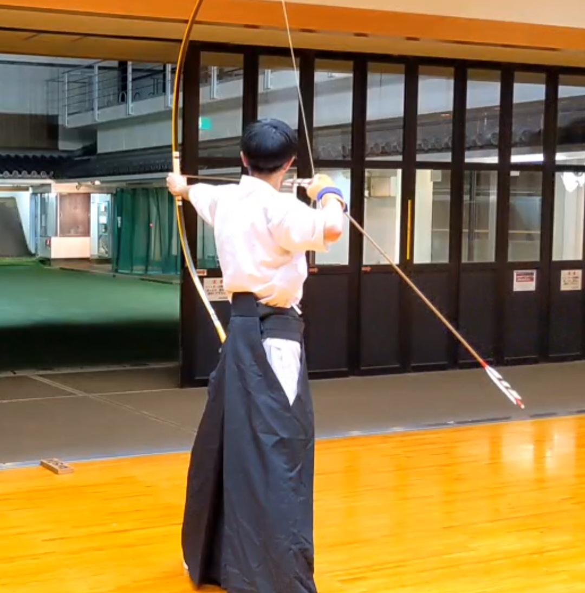

About Me
One of the most meaningful experiences I’ve had during university is being part of the Kyudo (Japanese archery) club. I joined the club in my first year and have been practicing regularly ever since. Kyudo is not only a sport but also a form of discipline and self-reflection. Each movement—from drawing the bow to releasing the arrow—requires focus, calmness, and precision. Over time, I’ve learned to control my emotions and improve my concentration, which has helped me in both my studies and daily life.
I’ve also participated in local competitions and helped train new members. Through the club, I’ve made great friends and developed a strong sense of responsibility and teamwork. Practicing Kyudo has taught me the importance of patience, consistency, and mindfulness.
